Для работы с системой «Электронный журнал» необходимо ввести в адресную строку браузера: ej.bsmu.by.
Если сложно руками вбивать адрес, можно зайти на сайт «Сотруднику» (my.bsmu.by) и там кликнуть по ссылке «Электронный журнал».
В окно авторизации необходимо ввести данные своей учётной записи: имя пользователя и пароль (как при входе в компьютер). В случае, если вы не помните свой логин или пароль, необходимо обращаться в каб. 213 главного корпуса по телефону: +375 17 277-26-07 (вн. 431).
Примечание: когда вы заканчиваете работу с электронным журналом, настоятельно рекомендуем нажать ссылку «Выход». Таким образом, пока вы спите, ни один шпион не сможет воспользоваться вашими устройствами и наставить неправильных отметок.
В системе предусмотрены следующие статусы:
− Преподаватель (профессор, доцент, ассистент, ведущий лаборант, лаборант (1 категории, 2 категории, без категории), ординатор, старший преподаватель, преподаватель, преподаватель-стажер, совместитель-почасовик, внешний почасовик).
− Заведующий кафедры (заведующий кафедры, И.О. заведующего кафедрой, начальник кафедры, заместитель начальника кафедры).
− Деканат (декан, заместитель декана, начальник факультета, заместитель начальника факультета, старший диспетчер, диспетчер, методист, заведующий ПО).
Доступные роли пользователя отображаются в правом верхнем углу.
В системе предусмотрены следующие обозначения отметок:
Отметки для ролей «Преподаватель» и «Заведующий кафедры»
Помимо приведенных обозначений,о умолчанию допускаются цифровые обозначения от 1 до 10
Отметки для роли «Декан»
Ну − Пропуск занятия по уважительной причинеПосле успешной авторизации необходимо выбрать дисциплину: кликнуть на необходимый факультет. Далее кликнуть на одну из ссылок (практ./лекция) в конкретной учебной группе. Символом "И" обозначаются группы с иностранными студентами
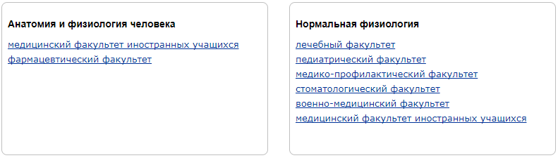Примечание: Если вы заметили, что в списке не хватает факультета или учебной группы, или ещё что хуже — лишние дисциплины — обращайтесь в учебный отдел университета. Скорее всего, из учебного отдела в электронный журнал не поступила обновлённая информация по дисциплинам.
Примечание: В случае, когда в списке группы не хватает студента необходимо обращаться в соответствующий деканат. Данные о списках студентов по группам вытягиваются из деканатской системы «Студент» в режиме реального времени.
Для создания нового занятия необходимо кликнуть «Новое занятие». В открывшемся окне выбрать дату, тип занятия: «Обычное занятие», «Коллоквиум/История болезни», «Аттестация (экзамен)», и по желанию ввести «№ темы».
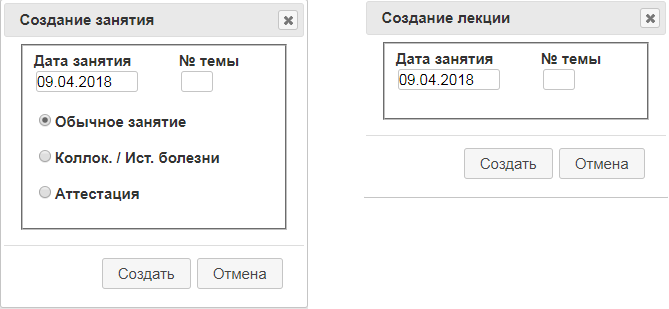Нажать кнопку «Создать». После успешного создания в конце, ранее созданных столбцов, появится пустой столбик белого (обычное занятие), светло-голубого (коллоквиум) или светло-оранжевого цвета (аттестация), в соответствии с выбранным типом занятия.
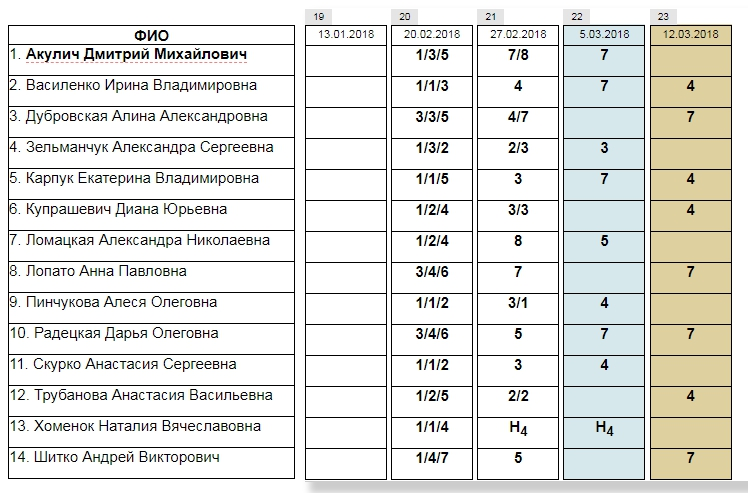В случае, если преподаватель ошибся с датой, типом или номером темы занятия необходимо левой кнопкой мыши дважды кликнуть по дате занятия.
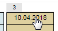В появившемся окне исправить данные. Нажать кнопку «Изменить». Столбцы с занятиями сортируются по возрастанию даты на этапе загрузки страницы. В случае, если вы создаете занятия не по порядку и хотите увидеть, как они должны быть правильно размещаться, после создания обновите страницу (можно нажать клавишу F5 на клавиатуре).
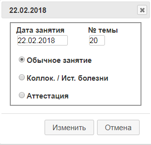Для выставления отметки дважды кликнете левой кнопкой мыши по необходимой клетке. Далее в поле ввода ввести с клавиатуры оценку или выбрать одно из предложенных значений в открывшемся окне. В зависимости от типа занятия, предлагаемый набор отметок различается. Допускается выставлять за одно занятие до 3 отметок для каждого из студентов. Для появления дополнительного поля, после заполнения первого поля оценки нажмите на «+» и так далее. Для сохранения нажмите кнопку «Сохранить».
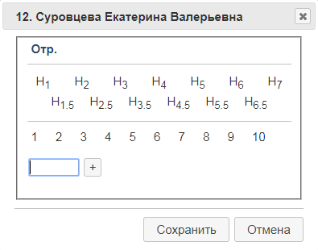Для редактирования отметки дважды кликните левой кнопкой мыши по отметке, исправьте на верную и нажмите «Сохранить». Для удаления – обратитесь к заведующему вашей кафедрой.
Согласно постановлению об отработках студентами пропущенных занятий, для дальнейшей автоматической оплаты прогулов, в 4:00 ежедневно система будет заменять все пропуски на «Нб.у»
Данный функционал доступен только для роли «Заведующий кафедры». Для удаления необходимо навести курсор мыши на интересующую отметку и кликнуть на красный крестик. Далее подтвердить удаление.
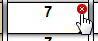За каждой выставленной оценкой в базе данных фиксируется лицо, выставившее ее. Для просмотра ФИО преподавателя, который выставил какую-либо отметку необходимо навести курсор на интересующую оценку и нажать на черный треугольник. На экране отобразятся ФИО преподавателя, дата и время выставления. Если ранее стояла какая-либо другая отметка, то будет выведена и она.
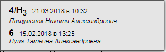Данная функция доступна для любой роли. Для экспорта оценок в exel-файл необходимо зайти в учебную группу и нажать на ссылку «Экспорт в .csv». Функция предусмотрена для личного хранения информации об успеваемости у преподавателя и дальнейшего расчета рейтинга.
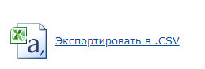Для роли «Декан» доступен поиск студента по фамилии или номеру зачетки. Возможно набрать часть фамилии. Студенты ищутся только в пределах факультета. После успешного поиска будет выведен список студентов удовлетворяющий условиям поиска. Кликнув на конкретного отобразится его успеваемость. Пользователь имеет возможность комплексно выбрать пропуски студента в границах одной дисциплины и заменить на Ну, Нб.у или Нб.о.
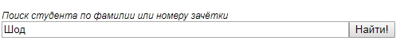Красными маркерами помечаются дисциплины, по которым имеются пропуски с указанием количества.
Для просмотра успеваемости группы необходимо выбрать дисциплину и учебную группу. Декан имеет возможность заменить любой пропуск занятия на Ну, Нб.у или Нб.о. кликнув дважды левой кнопкой мыши по красной клеточке.
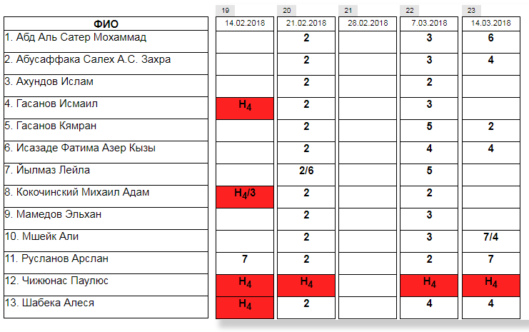